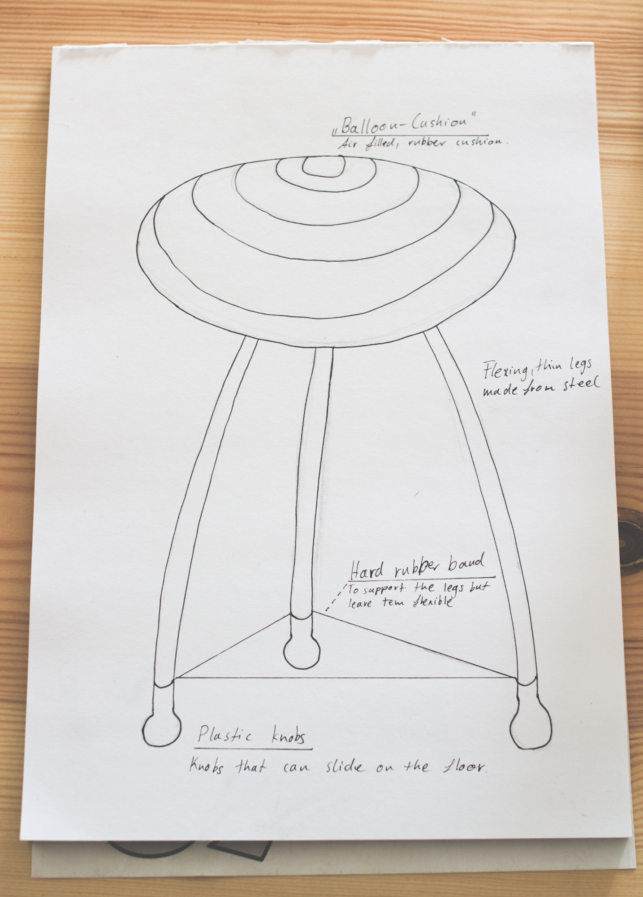
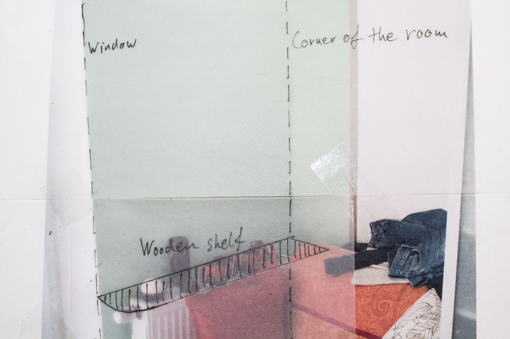
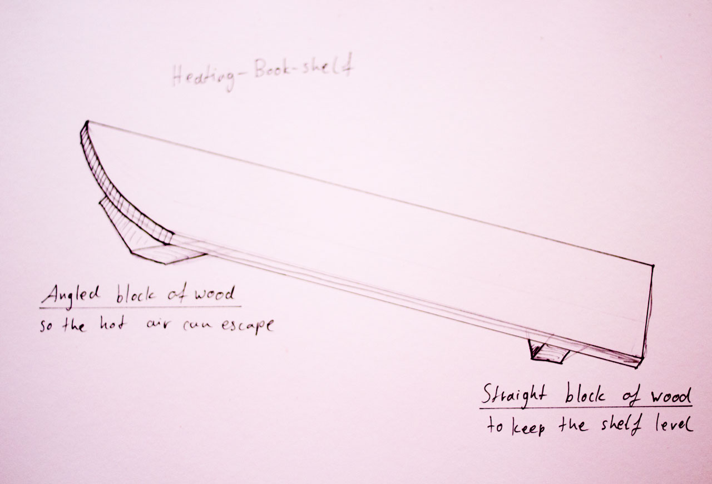
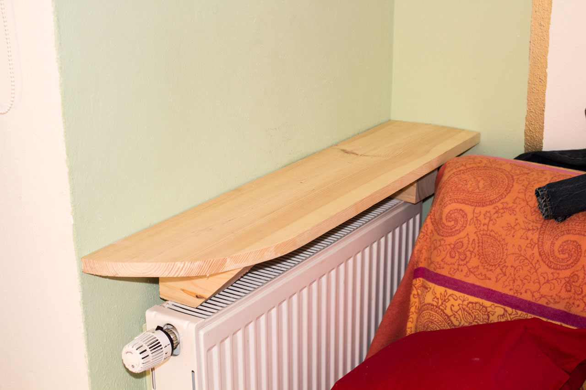

Coursera design course — Week 1 Assignments
1.1 – Good design

Apple Magic Mouse, picture credit: Apple Inc.
Why I love the Apple Magic Mouse
The Apple Magic Mouse delights me every time I use it, because it embraces the functionality available in modern computers. It iterates on existing models with buttons and scroll wheels and replaces those buttons with one single surface that knows where your fingers are.
It can be used as a regular mouse as if it had two buttons, but also for X- and Y-Axis scrolling, as opposed to the regular Y-Axis only scrolling you get from a scroll-wheel. Additionally it allows for gestures and uses bluetooth so it can be used without an adapter/connector. All of it in an elegant and beautiful package.
(107 Words, not counting the headline)
1.2 – Find the gap
- A digital portfolio for physical and non-physical artifacts.
An interactive website with 3D represenatations of physical artifacts and different visual representations of non-physical artifacts. Many designers show pictures and sometimes movies, but almost never does a designer have the software skills to build a 3D portfolio of interactive models that could allow visitors to turn or change the lighting.
- Coursera for iOS (redesign).
The current app is incomplete, often you have to switch to a web browser to do basic things. I wish the Coursera app had a clear visual language and the full functionality of the website.
- Great and respectful advertising online.
Due to the inflation of ads online, they have become more aggressive and intrusive. I wish online advertising was motivated to create beautiful ads that are entertaining.
- Food & Health.
Eating healthy in the modern fast paced life is either complicated or expensive, it should be neither. I wish there was a service to assist in healthy decision making around food.
- Data Storage.
We need more compact solutions that hold more data in a smaller form factor safe enough to not need a backup. All of this in a package of cents and milliwatts per terabyte.
- Twitter spam filter.
A service that crawls (indexes) your Twitter feed for spammers, negative people and people who follow thousands and removes them from your Twitter life.
- A place to put that.
A decorative artifact that has invisible compartments to store things that clutter your life. Medicine, keys, glasses…
- A nice electronics bag with solar panels to charge whatever you put into it.
I wish my bag charged my phone, tablet, camera, headphones, watch… you know, a purse, murse, rucksack that looks great, protects it's contents against bumps and falls and has an internal battery and solar panels so all my devices stay charged when they're inside. This is my gap, the project for this course.
- Table top water filter.
A carafe or similar with a filter in the top that I can pour water into and still use to pour myself a drink before it's all filtered through.
- An easy to use website editor that creates high quality code.
Most automatically generated websites are difficult to access on mobile or if you have a visual impairment. It should be easy for "normal" non tech-savvy people to edit and create websites or online shops of high code quality that are beautiful and accessible and remain independent from big companies like Squarespace, Facebook or Etsy.
- An "all the things" cabinet.
I have a corner with a comfortable chair that is being abused as a corner for everything. My gym gear, some books, some DVDs… its all there. I wish there was a peace of furniture for the sole purpose of storing many different kinds of things nicely and easy to access.
1.3 – Visual expression one: The Basics
A simple sketch of a chair with annotations.

This chair has flexible legs, held by a hard rubber band. The cushion is like one of those gymnastic balls, just a lot smaller and flat.
1.4 – Design for you
This is the corner in my bedroom where everything lands in the end. I need a shelf for Books, DVDs and more. The clothes will have to go elsewhere. I used transparent paper to draw a first sketch on a picture of the room.

Following are the sketch that shows how the shelf stands on the heater and the photograph of the prototype.


I made the prototype from wood in the shop, its rough, but it nicely shows how the shelf could sit on the heater and allow me to put my books and DVDs in one place.